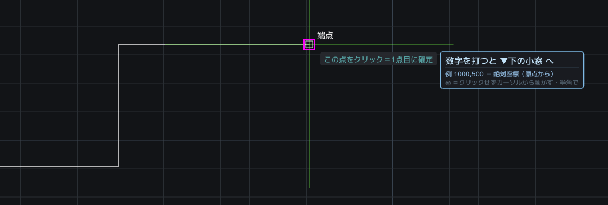

スナップ（吸着）

図形の大事な点に、カーソルがピタリと吸い付きます。
吸い付く点＝端点・中点・円と弧の中心・点・交点・
かたちの中心・文字（挿入基点・枠の四隅・中央）。
- かたちの中心＝閉じた形の真ん中（藤色の□に点）。四角・ポリゴン（正多角形）・閉じたポリラインで名乗ります。例：六角ボルトの芯にネジ穴を描く——中心に吸い付けます。⚠️空中の点なので、本物の点（端点など）が近くにあるとそちらが先に名乗ります。Tab で送れば手が届きます。
- スプラインは、両端のほかに自分がクリックした通過点にも吸い付きます。（曲線を引いたときの、あの点そのもの。制御点には吸いません＝制御点は曲線から浮いている錘なので、掴んでも意味がないためです）
候補が重なる場所では Tab で切り替えられます。
下の帯の「スナップ」チップで入切できます。
規律チップ（自由・直交・極トラ）
下の帯の規律チップは、押すたびに巡ります。
- 自由＝縛りなし。のびのび描く。
- 直交＝90度専門。水平と垂直だけ。F8 でも切り替え。Shift を押している間だけ、一時的に反転できます。
- 極トラッキング＝決めた角度刻みの綱を張る。チップを右クリック＝刻みの変更（例 45）。小窓で POLAR 30 とも打てます。
どこで効くか
「もう一点打ってある」道具なら、どれでも効きます。
線分・ポリライン・移動・複製・ストレッチ・つまみ・
円（中心から半径へ）・3点円弧・楕円・スプライン・
ハッチの角・寸法・引出線の折れ点・配列複写・
アイソメ・鏡像の軸・実寸合わせ。
一点目には効きません（どこから見て水平か、が
まだ決まっていないため。これはCAD共通の作法です）。
効く場面では、カーソル脇の札が
「F8＝直交」または「直交ON＝水平・垂直だけ」と
名乗ります。斜めへ行かないときは、そこを見てください。
※四角と段落文字の対角には、わざと効かせていません（対角を90度で縛ると、正方形しか描けなくなるため）。
※回転は「点」ではなく「角度」を縛ります（直交ON＝90度刻み）。
レーザー（⌥ Option）
⌥を押している間、指せる線が光って案内が出ます。
仮想交点（APPINT）では ⌥クリックで基準の線を
一本ずつ足したり外したりできます。
二点間中点（M2P・真ん中）
指した二点の「真ん中」を、いまの道具の点にする割り込みです。
道具が点を聞いている最中（基点・挿入点・1点目…）に
小窓で M2P（MTP・真ん中 でも可）と打ち、二点を指すと、
その真ん中がそのまま道具に渡ります。
例：表題欄の桝の真ん中に文字を——文字をかたちの中心で掴んで
移動 → M2P → 桝の対角の交点を2つ → 真ん中に着地。
二点それぞれに吸着が効くので、交点や端点をピタリと使えます。
やめるとき＝右クリックか Esc（道具はそのまま続きます）。
案内と距離欄の入切
- GUIDE＝カーソル脇の案内の入切。
- 距離DYNチップ＝カーソル脇の距離入力の入切。
消しても機能は失われません。好みで選んでください。